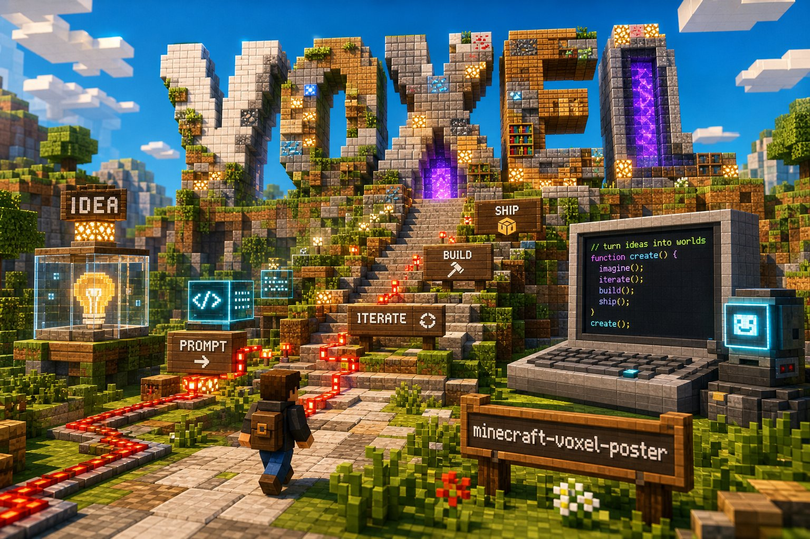

minecraft-voxel-poster
一个明亮、方块、世界搭建感的海报生成工作流。它把标题做成真实存在的体素结构，让“想法被搭起来”的感觉直接出现在画面里。

Style
Minecraft-inspired voxel poster
Use
项目海报、课程封面、工具发布图
Core
把标题搭成可进入的方块世界
它解决什么问题
当一个主题和“构建、系统、学习、升级、自动化”有关时，普通插画很容易显得太泛。体素海报的优势是：它可以把抽象概念变成建筑、路线、传送门、矿洞、红石线路和升级台阶。
这类画面天然适合讲“从一个小点子搭成一个世界”的过程，也很适合我现在的 AI 协作、项目发布和一人产品实验。
我想要的不是游戏截图感，而是一个人站在路口，真的准备走进自己搭出来的系统里。
我会怎么用它
- 给 AI 工具、自动化流程、Cloudflare 部署这类技术内容做更直观的封面。
- 把复杂路线做成“地图感”：入口、阶段、分支、目标一眼可见。
- 把一人产品的搭建过程做成系列视觉，让每次更新都像世界多了一块地形。
后面会继续补什么
这里先放项目入口和样例图。后续我会补提示词模板、标题重建模式、适合中文标题的缩写规则，以及哪些元素会让画面变脏、变乱、变得不高级。